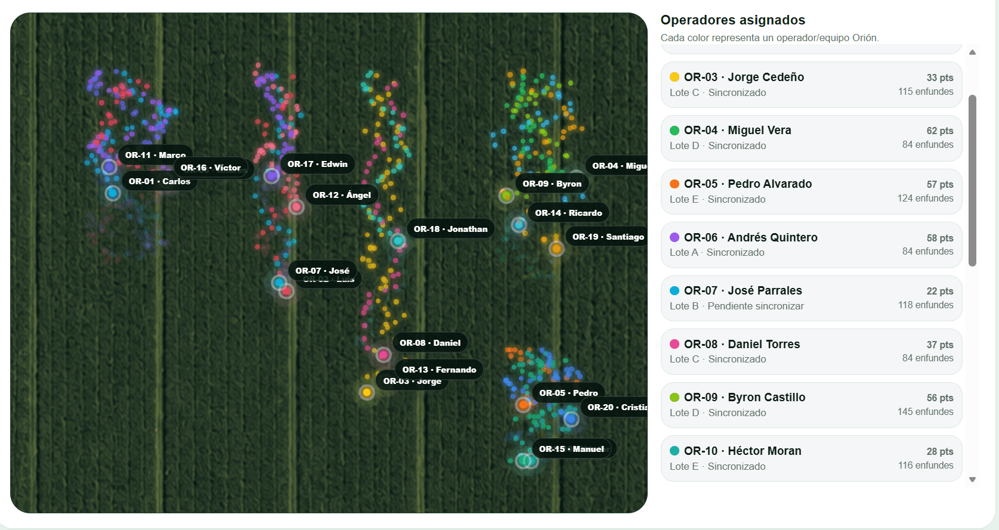
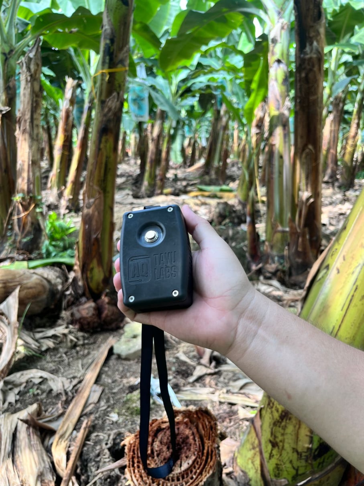

GALERIA


Nuestro dispositivo GPS autónomo monitorea en tiempo real la actividad de los operarios, registrando rutas, puntos de trabajo y productividad con alta precisión. Además, genera trazabilidad de cada enfunde, permitiendo conocer cuándo, dónde y quién realizó cada actividad para mejorar el control y la toma de decisiones.


Digitaliza el proceso de enfunde sin necesidad de instalaciones complejas. Cada acción queda registrada, permitiendo auditar labores, validar productividad por operario y generar históricos por lote o finca, brindando visibilidad total y control sobre la operación en campo.